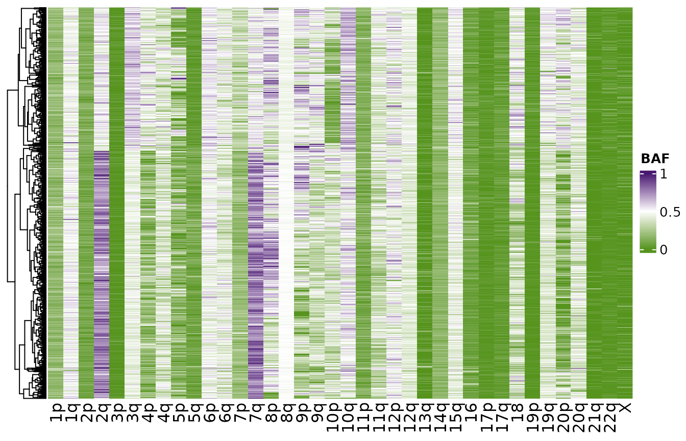
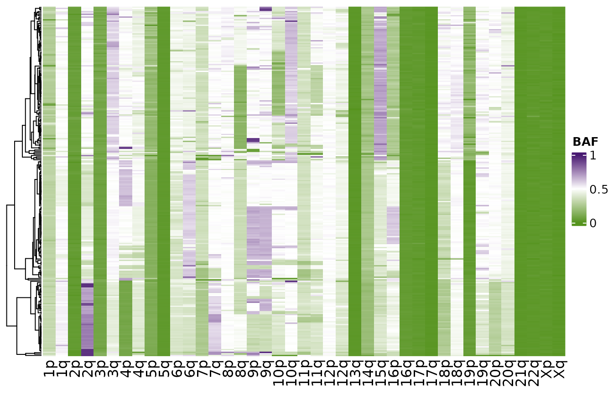
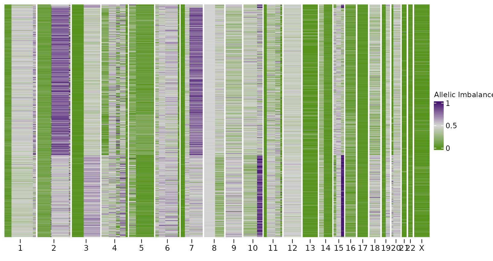
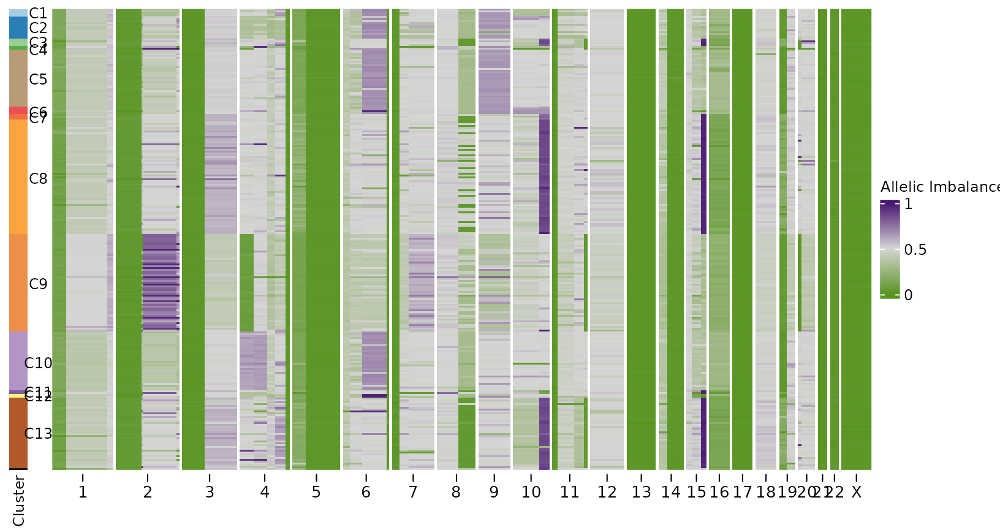
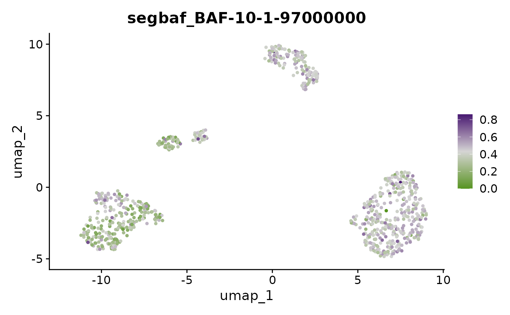
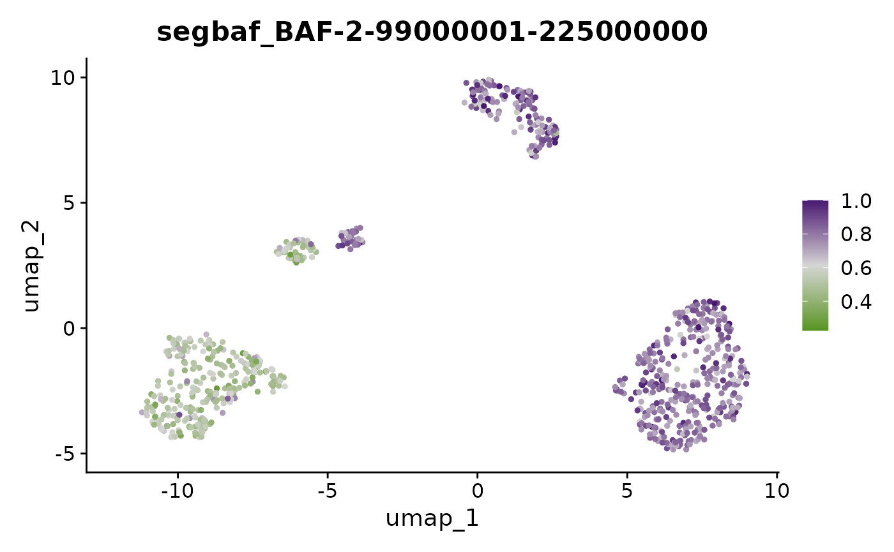
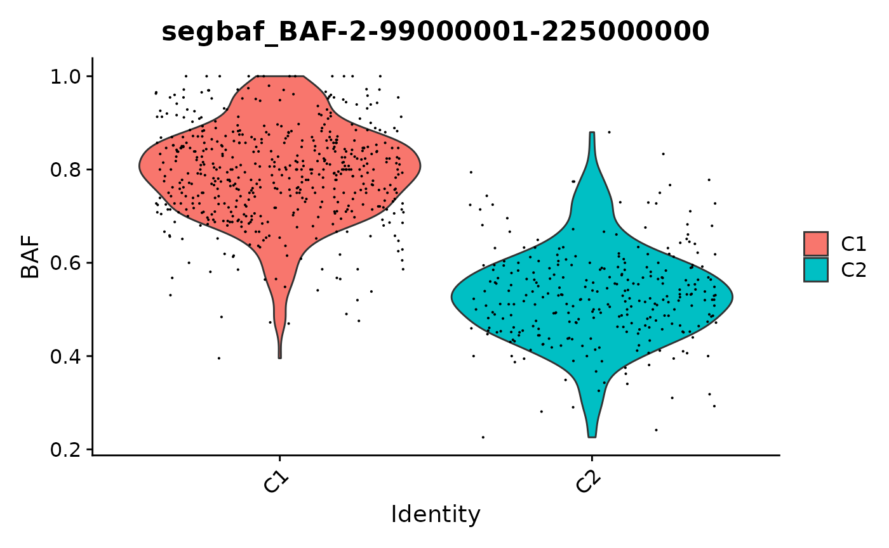
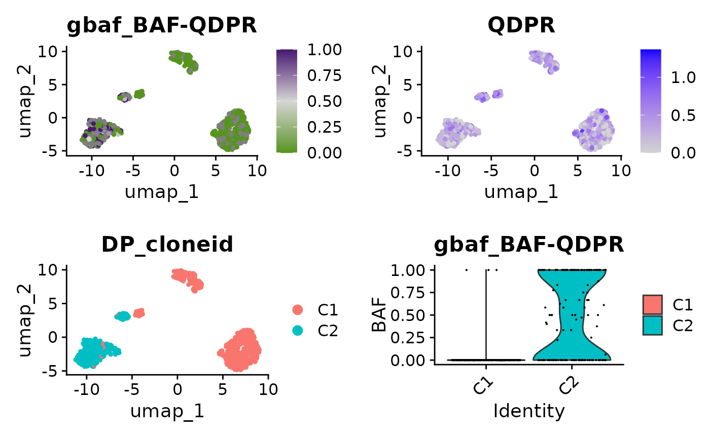

Allele Specific Copy Number Inference in scRNAseq
ASCN-RNA.RmdBackground
This vignette illustrates how to perform allele specific copy number inference in scRNAseq data. scRNAseq data is much more sparse than scDNAseq, so we perform inference on a chromosome arm basis by merging counts across segments or chromosome arms.
Data
The data needed to perform the allele specific copy number inference
are SNP calls of heterozygous positions in individual single cells.
Ideally haplotype block calling should also be performed, so that each
allele in each cell can be assigned to a haplotype block. To get this
data you will ideally need a whole genome sequenced bulk sample of
normal tissue to identify heterozygous SNPs and then you can use a tool
such as cellSNP or vartrix to get per cell counts. An example dataset
from ~814 cells is included here. For this dataset we also have paired
scDNAseq, where we have called HSCN using signals.
data("haplotypes_rna")scDNA
We can use information from scDNAseq to phase the SNPs in scRNAseq. To do this we’ll first compute haplotype specific copy number in scDNAseq and use this phasing information in the scRNAseq.
It’s also possible to perform this phasing just based on scRNAseq, but in general it will be less accurate.
data("haplotypes")
data("CNbins")
haplotypes <- format_haplotypes_dlp(haplotypes, CNbins)
hscn <- callHaplotypeSpecificCN(CNbins, haplotypes)
#> VGLM linear loop 1 : loglikelihood = -313086.2337
#> VGLM linear loop 2 : loglikelihood = -309095.6185
#> VGLM linear loop 3 : loglikelihood = -308536.8714
#> VGLM linear loop 4 : loglikelihood = -308510.4127
#> VGLM linear loop 5 : loglikelihood = -308510.0155
#> VGLM linear loop 6 : loglikelihood = -308510.0119
#> VGLM linear loop 7 : loglikelihood = -308510.0118ASCN inference
The first step is to format this dataframe. This will phase the haplotypes across all the cells and add additional columns such as the B-Allele Frequency. Our scDNAseq includes information on the phasing of haplotype blocks which we’ll use as input.
data("haplotypes_rna")
haplotypes_rna <- format_haplotypes_rna(haplotypes_rna,
phased_haplotypes = hscn$haplotype_phasing)As a first look at the data we can calculate the BAF per arm in each
cell and plot these distributions using per_chr_baf_plot.
Notice on this dataset that the BAFs in chromosomes 3p,
2p, and 17 in almost all cells are very left
skewed towards 0 suggesting clonal LOH events in these chromosomes. We
can also see other chromosome arms such as 4p and 2q that have
multimodal distributions, suggesting different clusters of cells.
per_chr_baf_plot(haplotypes_rna$block_counts, perarm = TRUE)
For comparison we can plot a similar distribution from our scDNAseq dataset. Here we notice similar trends but note that data from the scRNAseq is much more dispersed due to the lower number of counts per cell. scRNAseq will have 1-2 orders of magnitude lower reads so our ability to identify SNPs is reduced.
per_chr_baf_plot(hscn$data, perarm = TRUE)
We can also plot heatmaps of the 2 modalities as shown below, rows are clustered by hierarchical clustering.
plotHeatmapBAF(haplotypes_rna$block_counts)
plotHeatmapBAF(hscn$data)
We’ll now move on to inferring the allele specific copy number in the scRNAseq. Rather than use chromosome arms, we first use the single cell DNA sequencing data to identify segments that have different allele specific copy number. We compute consensus copy number across all cells, identify segments where the allele specific copy number phased state is consistent and then finally merge any segments that are smaller than 10Mb.
consensus <- consensuscopynumber(hscn$data)
segments <- create_segments(consensus, field = "state_phase")
segments <- filter_segments(segments, binwidth = 10e6)Note, that if you have some other ways to obtain segments such as
bulk whole genome sequencing then that would also work. The
segments data frame needs to have the columns
chr, start and end.
Alternatively, if you don’t have any data that can be used to identify
segments a priori you can just use chromosome arms as the segmentation.
To do this just leave the segments option in any of the following
function empty and the functions will revert to the default of using
chromosome arms.
Our inference scheme is based on using dirichilet process clustering using Viber to cluster cells that share similar BAF distributions across segments. We first compute BAF frequencies across each segment in each cell.
haplotypes_per_segment <- per_segment_baf_mat(haplotypes_rna$block_counts, segments = segments)
ascn_rna_dp <- assign_states_dp(haplotypes_per_segment$bafpersegment, haplotypes_rna)
#> [1] 814 5
#> [ VIBER - variational fit ]
#>
ascn_rna_dp
#> Haplotype specific copy number object (RNA)
#>
#> Number of cells: 814
#> Number of clusters: 2
#> Chromosomes used for clustering:Here, we found 2 clusters. We can visualize the separation of
clusters using a similar plot to before. Setting
lableclones = TRUE will colour each cell by their clone
assignment.
per_segment_baf_plot(ascn_rna_dp$hscn, labelclones = TRUE)
Heatmap
Finally we can plot heatmaps of the resulting outputs. Firstly using the scRNA.
bins <- segments_to_bins(ascn_rna_dp$hscn)
plotHeatmap(bins,
clusters = ascn_rna_dp$clusters,
reorderclusters = TRUE,
spacer_cols = 15,
plotcol = "BAF",
plottree = FALSE,
show_library_label = FALSE,
show_clone_label = FALSE,
show_legend = FALSE)
We can also do this for the scDNAseq data. For more straightforward comparison we’ll perform the dirichlet process arm level inference as we do for the scRNAseq. We can see that the scRNAseq has much lower resolution that scDNAseq, but we are still able to recover the events shared across all cells and clones that are at a reasonably high frequency.
hscn_dna_segment <- per_segment_baf_mat(hscn$data, segments)
ascn_dna_dp <- assign_states_dp(hscn_dna_segment$bafpersegment)
#> [1] 250 5
#> [ VIBER - variational fit ]
#>
bins_dna <- segments_to_bins(ascn_dna_dp$hscn)
plotHeatmap(bins_dna,
clusters = ascn_dna_dp$clusters,
reorderclusters = TRUE,
spacer_cols = 15,
plotcol = "BAF",
plottree = FALSE,
show_library_label = FALSE,
show_legend = FALSE)
Integration with Seurat
We can also integrate this inference with Seurat. We’ll first load a gene expression counts matrix and then run the standard Seurat pipeline,
data("countsmatrix")
library(Seurat)
x <- CreateSeuratObject(countsmatrix)
x <- NormalizeData(object = x)
x <- FindVariableFeatures(object = x)
x <- ScaleData(object = x)
x <- RunPCA(object = x)
x <- FindNeighbors(object = x)
x <- FindClusters(object = x)
#> Modularity Optimizer version 1.3.0 by Ludo Waltman and Nees Jan van Eck
#>
#> Number of nodes: 814
#> Number of edges: 24960
#>
#> Running Louvain algorithm...
#> Maximum modularity in 10 random starts: 0.7907
#> Number of communities: 7
#> Elapsed time: 0 seconds
x <- RunUMAP(object = x, dims = 1:20, reduction = "pca")Then we can use createBAFassay to add a BAF
assay and add clone_id to the metadata.
x <- createBAFassay(x, ascn_rna_dp, "hg19")This means all the Seurat functionality is available to analyse the allele specific copy number. For example we can plot low dimensional embeddings of BAF values per cell per chromosome or coloured by clone as shown below.
DimPlot(x, group.by = "DP_cloneid")
rownames(x@assays$segBAF)
#> [1] "BAF-1-1-47000000" "BAF-1-225500001-243700000"
#> [3] "BAF-1-47000001-225500000" "BAF-10-1-97000000"
#> [5] "BAF-10-97000001-130600000" "BAF-11-119500001-130800000"
#> [7] "BAF-11-1-20500000" "BAF-11-20500001-82500000"
#> [9] "BAF-11-82500001-119500000" "BAF-12-1-123000000"
#> [11] "BAF-13-1-110300000" "BAF-14-1-54000000"
#> [13] "BAF-14-54000001-104000000" "BAF-15-1-43000000"
#> [15] "BAF-15-43000001-77000000" "BAF-15-77000001-98500000"
#> [17] "BAF-16-1-88700000" "BAF-17-1-75300000"
#> [19] "BAF-18-1-73100000" "BAF-19-1-28000000"
#> [21] "BAF-19-28000001-56300000" "BAF-2-1-88500000"
#> [23] "BAF-2-225000001-237300000" "BAF-2-88500001-99000000"
#> [25] "BAF-2-99000001-225000000" "BAF-20-13000001-58400000"
#> [27] "BAF-20-1-13000000" "BAF-21-1-42600000"
#> [29] "BAF-22-1-49400000" "BAF-3-1-75500000"
#> [31] "BAF-3-75500001-192300000" "BAF-4-108500001-138500000"
#> [33] "BAF-4-138500001-176000000" "BAF-4-176000001-187100000"
#> [35] "BAF-4-1-47500000" "BAF-4-47500001-108500000"
#> [37] "BAF-5-1-51000000" "BAF-5-51000001-176600000"
#> [39] "BAF-6-154000001-164500000" "BAF-6-1-24000000"
#> [41] "BAF-6-24000001-65500000" "BAF-6-65500001-154000000"
#> [43] "BAF-7-1-26000000" "BAF-7-26000001-62000000"
#> [45] "BAF-7-62000001-81500000" "BAF-7-81500001-155100000"
#> [47] "BAF-8-1-75000000" "BAF-8-75000001-139900000"
#> [49] "BAF-9-1-137400000" "BAF-X-1-147100000"
FeaturePlot(x, "BAF-3-75500001-192300000") + scale_color_gradientn(colors = scBAFstate_cols())
FeaturePlot(x, "BAF-10-1-97000000") + scale_color_gradientn(colors = scBAFstate_cols())
FeaturePlot(x, "BAF-2-99000001-225000000") + scale_color_gradientn(colors = scBAFstate_cols())

We can also pull out the allelic imbalance in individual genes. Let’s look at some genes on 4p, where one group of cells is homozygous. Most genes have very few counts, so we’ll pull out genes with a large number of genotyped SNPs to take a look at.
chr4pgenes <- x[["gBAF"]]@meta.features %>% dplyr::filter(arm == "4p") %>%
dplyr::arrange(desc(totalsnpcounts))
mygene <- chr4pgenes$ensembl_gene_symbol[2]
cowplot::plot_grid(
FeaturePlot(x, paste0("BAF-", mygene)) + scale_color_gradientn(colors = scBAFstate_cols()),
FeaturePlot(x, mygene),
DimPlot(x, group.by = "DP_cloneid"),
VlnPlot(x, paste0("BAF-", mygene), group.by = "DP_cloneid") + ylab("BAF"))
Note that even in this example where we have been able to identify lots of SNP counts in this gene, most individual cells will still have very few counts. This explains why in cluster C2, the violin plot shows that there are lots of cells with BAF of 0.0 or 1.0, suggesting these cells are homozygous. This however is likely just because the number of counts is very small, even for a heterozygous SNP we’re very likely to see cells where we have only sampled the reference or the alternate allele. The key here, is that in cluster C1 we only see cells with BAF = 0.0 which is unlikely to be down to sampling alone. In contrast in C2 we see cells across a range of BAF, consistent with expression of of both alleles + random sampling.